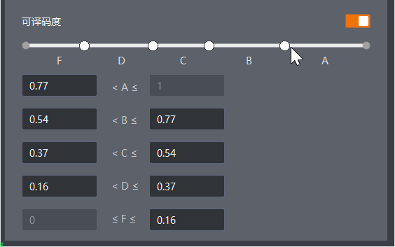
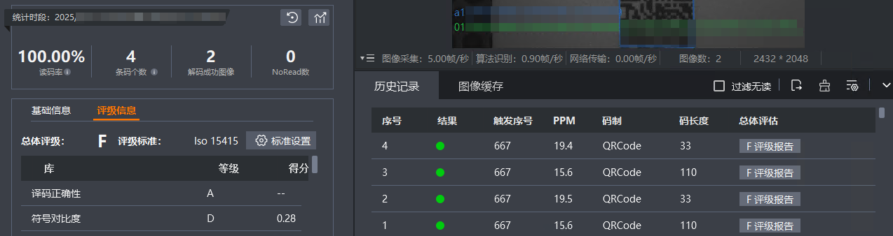

打码评级功能支持对采集到的二维码图像进行质量评估和等级评分。二维码打码评级功能通过ISO15415、ISO29158标准，分别从 9 个方面对条码进行判断， 选取所有评判标准中最低的等级作为条码的等级判断结果。
在条码类型参数中已添加二维码码制。
选择是否根据评级等级进行条码过滤，开启后可通过二维码总评级过滤条件参数设置过滤条件，可选择A、B、C、D、F等级。
当条码等级低于所设置等级时，将对该条码内容进行过滤。
当条码等级高于或者等于所设置等级时，方可进行条码内容输出。
设置单次打码评级最多可以评级的码个数。
选择二维码打码评级所依据的国际标准，可选择ISO15415标准或ISO29158标准。
如果条码是印刷在传统标签或纸张上，建议选择ISO15415标准。
如果条码是直接打印或刻印在产品表面，建议选择ISO29158标准。
根据实际图像采集场景选择是否镜像，可选如下模式。
自适应：IDMVS自动检测图像是否为镜像，并相应地进行处理。
镜像：当采集的图像是从镜子中反射得到的，即图像在X轴方向上呈现镜像效果时，应选择镜像模式。
非镜像：当采集的图像不是镜像反射图像，即图像保持原始方向和形态时，应选择非镜像模式。
选择是否对二维码的污损程度进行检测与评估。
选择是否对二维码中模块的反射率与背景反射率之间的差异进行评估。
选择是否对条码的译码结果进行正确性检测。
|
评判标准 |
说明 |
|---|---|
|
轴非均一性 |
评估条码在水平轴和垂直轴方向上的模块宽度或高度的不均匀程度。 |
|
网格不一致性 |
评估条码网格交叉点与理想位置之间的最大矢量偏差。 |
|
调制比 |
数值为最小边缘对比度与符号对比度的比值，评估条码中局部对比度的变化情况。 |
|
打印伸缩 |
评估条码在印刷过程中相对于其标称大小的增长或缩小程度。 |
|
符号对比度 |
评估条码背景和条形之间颜色差异程度。 |
|
未使用的误差矫正 |
评估条码中尚未被使用的纠错容量。 |
支持以下两种方式设置各等级的评判值区间。
拖动数轴上的4个分隔点，分隔出各等级的评判值区间，操作方法如下。

在对应等级评判值输入框中输入数值，需保证数值区间不重叠。
在打码评级中，A等级代表最优，F等级代表最差。最终输出的条码等级将取所有评估标准中出现的最差等级。
当读码器读码完成后，您可在统计面板的评级信息页签和历史记录页签的总体评估列查看条码评级等级，如下图所示。
您也可以通过在IDMVS主界面选择读码设置 > 快速配置 > 开始工作，即时查看打码评级结果。

如果需要对输出的评级等级进行解析，可单击条码对应总体评估列的评级报告，查看各项参数的具体评估报告。同时支持在评级报告窗口中单击保存至本地，以PDF格式保存评级报告文件；单击打印，打印当前评级报告。